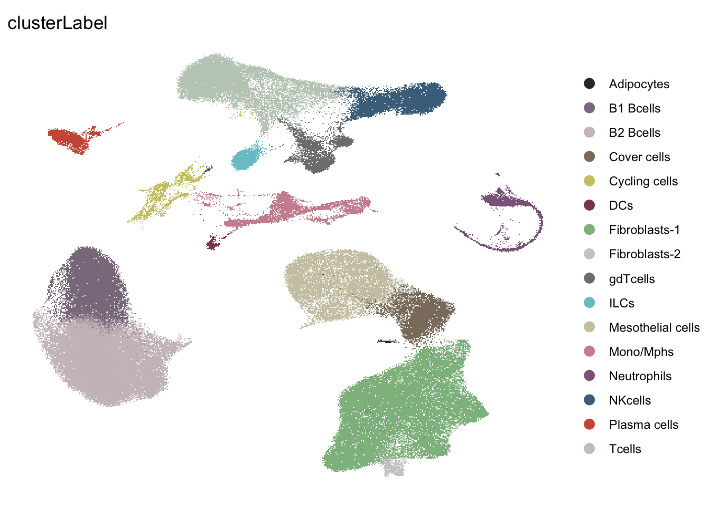
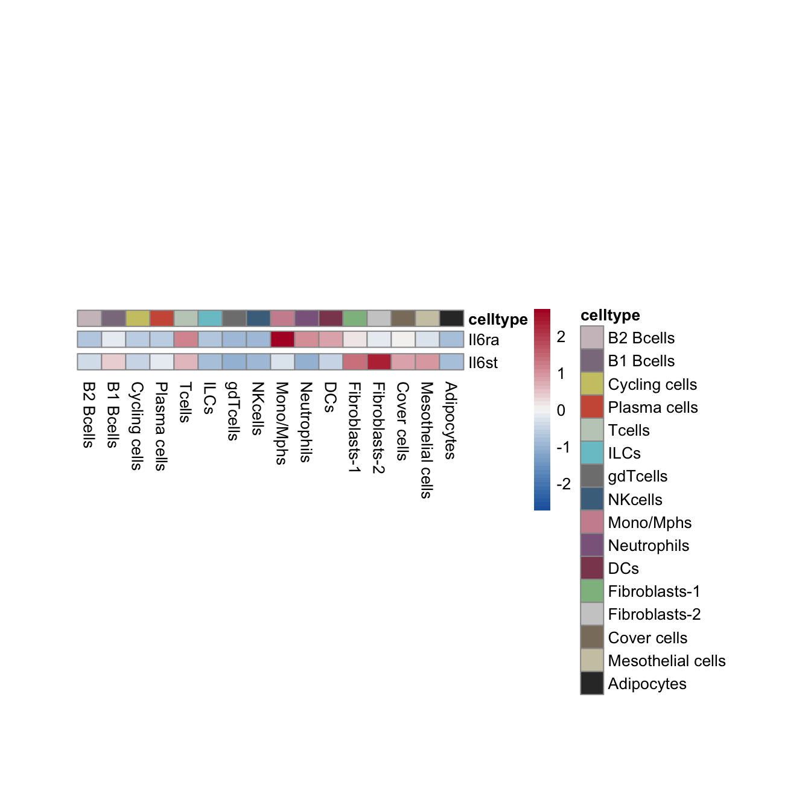
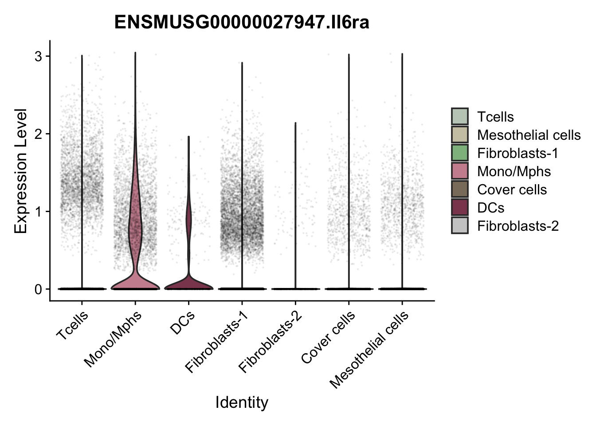
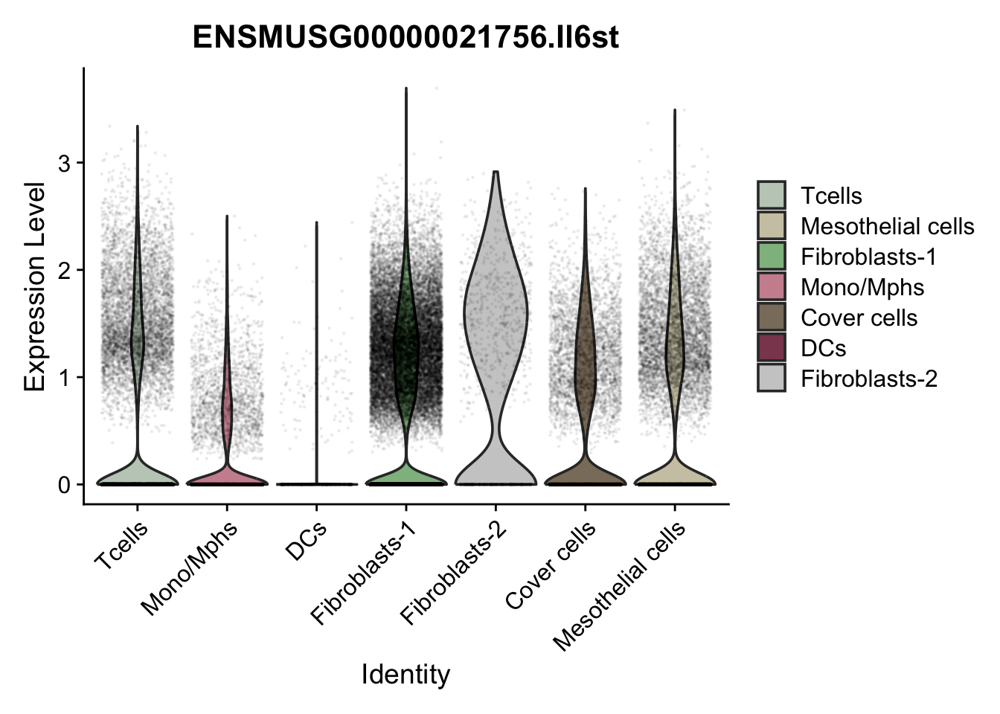
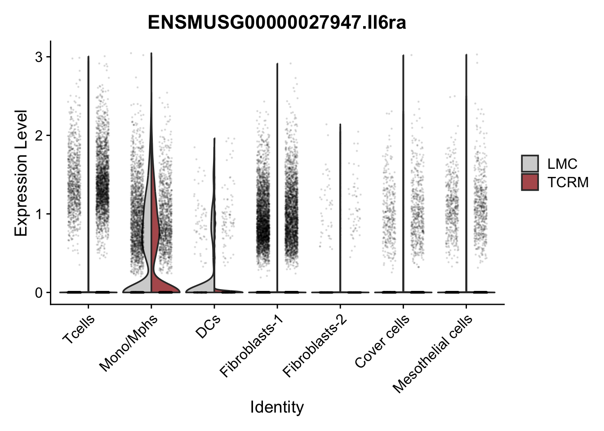
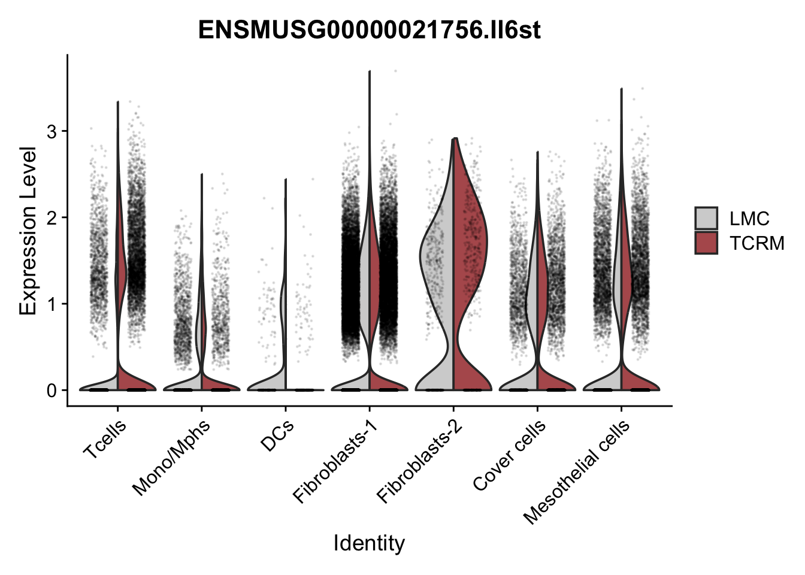

Last updated: 2026-07-10
Checks: 6 1
Knit directory: MuPericarditis/
This reproducible R Markdown analysis was created with workflowr (version 1.7.2). The Checks tab describes the reproducibility checks that were applied when the results were created. The Past versions tab lists the development history.
The R Markdown is untracked by Git. To know which version of the R
Markdown file created these results, you’ll want to first commit it to
the Git repo. If you’re still working on the analysis, you can ignore
this warning. When you’re finished, you can run
wflow_publish to commit the R Markdown file and build the
HTML.
Great job! The global environment was empty. Objects defined in the global environment can affect the analysis in your R Markdown file in unknown ways. For reproduciblity it’s best to always run the code in an empty environment.
The command set.seed(20251126) was run prior to running
the code in the R Markdown file. Setting a seed ensures that any results
that rely on randomness, e.g. subsampling or permutations, are
reproducible.
Great job! Recording the operating system, R version, and package versions is critical for reproducibility.
Nice! There were no cached chunks for this analysis, so you can be confident that you successfully produced the results during this run.
Great job! Using relative paths to the files within your workflowr project makes it easier to run your code on other machines.
Great! You are using Git for version control. Tracking code development and connecting the code version to the results is critical for reproducibility.
The results in this page were generated with repository version 3f4022e. See the Past versions tab to see a history of the changes made to the R Markdown and HTML files.
Note that you need to be careful to ensure that all relevant files for
the analysis have been committed to Git prior to generating the results
(you can use wflow_publish or
wflow_git_commit). workflowr only checks the R Markdown
file, but you know if there are other scripts or data files that it
depends on. Below is the status of the Git repository when the results
were generated:
Ignored files:
Ignored: .Rproj.user/
Ignored: data/
Untracked files:
Untracked: analysis/10_subset_Tcells.Rmd
Untracked: analysis/11_characterize_Tcells.Rmd
Untracked: analysis/12_cellchat_TCRM_vs_Ctrl.Rmd
Untracked: analysis/13_cellchat_T_FB_merge.Rmd
Untracked: analysis/4_characterize_full_dataset.Rmd
Untracked: analysis/5_IL6_full_dataset.Rmd
Untracked: analysis/6_Subset_FBs.Rmd
Untracked: analysis/7_characterize_FBs.Rmd
Untracked: analysis/8_FRC_Ctrl_vs_TCRM.Rmd
Untracked: analysis/9_IL6_FBs.Rmd
Unstaged changes:
Modified: .gitignore
Deleted: analysis/10_subset T cells.Rmd
Deleted: analysis/11_characterize T cells.Rmd
Deleted: analysis/12_cellchat TCRM vs Ctrl.Rmd
Deleted: analysis/13_cellchat T FB merge.Rmd
Deleted: analysis/4_characterize full dataset.Rmd
Deleted: analysis/5_IL6 full dataset.Rmd
Deleted: analysis/6_Subset FBs.Rmd
Deleted: analysis/7_characterize FBs.Rmd
Deleted: analysis/8_FRC Ctrl vs TCRM.Rmd
Deleted: analysis/9_IL6 FBs.Rmd
Note that any generated files, e.g. HTML, png, CSS, etc., are not included in this status report because it is ok for generated content to have uncommitted changes.
There are no past versions. Publish this analysis with
wflow_publish() to start tracking its development.
suppressPackageStartupMessages({
library(dplyr)
library(ggplot2)
library(Seurat)
library(here)
library(pheatmap)
library(tibble)
})# Load merged and cleaned object
basedir<- here()
fileNam <- paste0(basedir, "/data/pericarditis_allmerged_cleaned_cL_seurat.rds")
seuratM <- readRDS(fileNam)# Color palette clusterLabel
colPal <- c( "#CDC1C5","#8B7B8B","#CDC673","#CD5B45","#C1CDC1","#7AC5CD","#7F7F7F","#4A708B","#CD919E","#8B668B","#8B475D","#8FBC8F","#CCCCCC","#8B7D6B","#CDC8B1","#333333")
names(colPal) <- c("B2 Bcells","B1 Bcells", "Cycling cells","Plasma cells", "Tcells", "ILCs", "gdTcells", "NKcells", "Mono/Mphs", "Neutrophils", "DCs", "Fibroblasts-1", "Fibroblasts-2", "Cover cells","Mesothelial cells", "Adipocytes")
# Color palette Phenotypes
colPal_Phenotype <- c("#8B0000", "#FCDACB", "#E6E6E6")
names(colPal_Phenotype) <- c( "iCMP", "inflamed", "healthy")Idents(seuratM) <- seuratM$clusterLabel
DimPlot(seuratM, reduction = "umap", cols=colPal, group.by= "clusterLabel") + theme_void()
avgHeatmap <- function(seuratA, selGenes, colVecIdent, colVecCond=NULL,
ordVec=NULL, gapVecR=NULL, gapVecC=NULL,cc=FALSE,
cr=FALSE, condCol=FALSE){
selGenes <- selGenes$gene
## assay data
clusterAssigned <- as.data.frame(Idents(seuratA)) %>%
dplyr::mutate(cell=rownames(.))
colnames(clusterAssigned)[1] <- "ident"
seuratADat <- GetAssayData(seuratA)
## genes of interest
genes <- data.frame(gene=rownames(seuratA)) %>%
mutate(geneID=gsub("^.*\\.", "", gene)) %>% filter(geneID %in% selGenes)
## matrix with averaged cnts per ident
logNormExpres <- as.data.frame(t(as.matrix(
seuratADat[which(rownames(seuratADat) %in% genes$gene),])))
logNormExpres <- logNormExpres %>% dplyr::mutate(cell=rownames(.)) %>%
dplyr::left_join(.,clusterAssigned, by=c("cell")) %>%
dplyr::select(-cell) %>% dplyr::group_by(ident) %>%
dplyr::summarise_all(mean)
logNormExpresMa <- logNormExpres %>% dplyr::select(-ident) %>% as.matrix()
rownames(logNormExpresMa) <- logNormExpres$ident
logNormExpresMa <- t(logNormExpresMa)
rownames(logNormExpresMa) <- gsub("^.*?\\.","",rownames(logNormExpresMa))
## remove genes if they are all the same in all groups
ind <- apply(logNormExpresMa, 1, sd) == 0
logNormExpresMa <- logNormExpresMa[!ind,]
genes <- genes[!ind,]
## color columns according to cluster
annotation_col <- as.data.frame(gsub("(^.*?_)","",
colnames(logNormExpresMa)))%>%
dplyr::mutate(celltype=gsub("(_.*$)","",colnames(logNormExpresMa)))
colnames(annotation_col)[1] <- "col1"
annotation_col <- annotation_col %>%
dplyr::mutate(cond = gsub("(^[0-9]_?)","",col1)) %>%
dplyr::select(cond, celltype)
rownames(annotation_col) <- colnames(logNormExpresMa)
ann_colors = list(
#cond = colVecCond,
celltype=colVecIdent)
if(is.null(ann_colors$cond)){
annotation_col$cond <- NULL
}
## adjust order
logNormExpresMa <- logNormExpresMa[selGenes,]
if(is.null(ordVec)){
ordVec <- levels(seuratA)
}
logNormExpresMa <- logNormExpresMa[,ordVec]
## scaled row-wise
pheatmap(logNormExpresMa, scale="row" ,treeheight_row = 0, cluster_rows = cr,
cluster_cols = cc,
color = colorRampPalette(c("#2166AC", "#F7F7F7", "#B2182B"))(50),
annotation_col = annotation_col, cellwidth=15, cellheight=10,
annotation_colors = ann_colors, gaps_row = gapVecR, gaps_col = gapVecC)
}# Selected genes
selMarker <- c("Il6ra", "Il6st")
#Set identity
Idents(seuratM) <- seuratM$clusterLabel
selGenes <- data.frame(gene=selMarker) %>%
rownames_to_column(var="grp") %>% mutate(Grp=gsub("_.*", "", grp))
grpCnt <- selGenes %>% group_by(Grp) %>% summarise(cnt=n())
gapR <- data.frame(Grp=unique(selGenes$Grp)) %>%
left_join(.,grpCnt, by="Grp") %>% mutate(cumSum=cumsum(cnt))
#Set color palette
colPal <- c( "#CDC1C5","#8B7B8B","#CDC673","#CD5B45","#C1CDC1","#7AC5CD","#7F7F7F","#4A708B","#CD919E","#8B668B","#8B475D","#8FBC8F","#CCCCCC","#8B7D6B","#CDC8B1","#333333")
names(colPal) <- c("B2 Bcells","B1 Bcells", "Cycling cells","Plasma cells", "Tcells", "ILCs", "gdTcells", "NKcells", "Mono/Mphs", "Neutrophils", "DCs", "Fibroblasts-1", "Fibroblasts-2", "Cover cells","Mesothelial cells", "Adipocytes")
#Set order
ordVec <- names(colPal)
pOut <- avgHeatmap(seurat = seuratM, selGenes = selGenes,
colVecIdent = colPal,
ordVec=ordVec,
gapVecR=gapR$cumSum, gapVecC=NULL,cc=F,
cr=F, condCol=F)
# Select clusters with Il6 receptor expression
seuratMSub <- subset(seuratM, idents = c("Tcells", "Mono/Mphs", "DCs", "Fibroblasts-1", "Fibroblasts-2", "Cover cells", "Mesothelial cells"))
ordX <- c("Tcells", "Mono/Mphs", "DCs", "Fibroblasts-1", "Fibroblasts-2", "Cover cells", "Mesothelial cells")VlnPlot(object = seuratMSub, features = "ENSMUSG00000027947.Il6ra", cols = colPal, alpha = 0.05) + scale_x_discrete(limits = ordX)
VlnPlot(object = seuratMSub, features = "ENSMUSG00000021756.Il6st", cols = colPal, alpha = 0.05) + scale_x_discrete(limits = ordX)
VlnPlot(object = seuratMSub, features = "ENSMUSG00000027947.Il6ra", cols = c("#D3D3D3", "#B45B5C"), split.by = "cond", split.plot = TRUE, alpha = 0.1) + scale_x_discrete(limits = ordX)
VlnPlot(object = seuratMSub, features = "ENSMUSG00000021756.Il6st", cols = c("#D3D3D3", "#B45B5C"), split.by = "cond", split.plot = TRUE, alpha = 0.1) + scale_x_discrete(limits = ordX)
sessionInfo()R version 4.4.0 (2024-04-24)
Platform: x86_64-apple-darwin20
Running under: macOS Sonoma 14.3.1
Matrix products: default
BLAS: /Library/Frameworks/R.framework/Versions/4.4-x86_64/Resources/lib/libRblas.0.dylib
LAPACK: /Library/Frameworks/R.framework/Versions/4.4-x86_64/Resources/lib/libRlapack.dylib; LAPACK version 3.12.0
locale:
[1] en_US.UTF-8/en_US.UTF-8/en_US.UTF-8/C/en_US.UTF-8/en_US.UTF-8
time zone: Europe/Zurich
tzcode source: internal
attached base packages:
[1] stats graphics grDevices utils datasets methods base
other attached packages:
[1] tibble_3.3.0 pheatmap_1.0.13 here_1.0.1 Seurat_5.3.0
[5] SeuratObject_5.1.0 sp_2.2-0 ggplot2_4.0.3 dplyr_1.1.4
loaded via a namespace (and not attached):
[1] deldir_2.0-4 pbapply_1.7-4 gridExtra_2.3
[4] rlang_1.1.6 magrittr_2.0.3 git2r_0.36.2
[7] RcppAnnoy_0.0.22 spatstat.geom_3.5-0 matrixStats_1.5.0
[10] ggridges_0.5.6 compiler_4.4.0 png_0.1-8
[13] vctrs_0.6.5 reshape2_1.4.4 stringr_1.5.1
[16] pkgconfig_2.0.3 fastmap_1.2.0 labeling_0.4.3
[19] promises_1.3.3 rmarkdown_2.29 ggbeeswarm_0.7.2
[22] purrr_1.1.0 xfun_0.52 cachem_1.1.0
[25] jsonlite_2.0.0 goftest_1.2-3 later_1.4.2
[28] spatstat.utils_3.1-5 irlba_2.3.5.1 parallel_4.4.0
[31] cluster_2.1.8.1 R6_2.6.1 ica_1.0-3
[34] spatstat.data_3.1-6 bslib_0.9.0 stringi_1.8.7
[37] RColorBrewer_1.1-3 reticulate_1.43.0 spatstat.univar_3.1-4
[40] parallelly_1.45.1 lmtest_0.9-40 jquerylib_0.1.4
[43] scattermore_1.2 Rcpp_1.1.0 knitr_1.50
[46] tensor_1.5.1 future.apply_1.20.0 zoo_1.8-14
[49] sctransform_0.4.2 httpuv_1.6.16 Matrix_1.7-3
[52] splines_4.4.0 igraph_2.1.4 tidyselect_1.2.1
[55] abind_1.4-8 rstudioapi_0.17.1 yaml_2.3.10
[58] spatstat.random_3.4-1 codetools_0.2-20 miniUI_0.1.2
[61] spatstat.explore_3.5-2 listenv_0.9.1 lattice_0.22-7
[64] plyr_1.8.9 shiny_1.11.1 withr_3.0.2
[67] S7_0.2.0 ROCR_1.0-11 ggrastr_1.0.2
[70] evaluate_1.0.4 Rtsne_0.17 future_1.58.0
[73] fastDummies_1.7.5 survival_3.8-3 polyclip_1.10-7
[76] fitdistrplus_1.2-4 pillar_1.11.0 KernSmooth_2.23-26
[79] plotly_4.11.0 generics_0.1.4 rprojroot_2.1.0
[82] RcppHNSW_0.6.0 scales_1.4.0 globals_0.18.0
[85] xtable_1.8-4 glue_1.8.0 lazyeval_0.2.2
[88] tools_4.4.0 data.table_1.17.8 RSpectra_0.16-2
[91] RANN_2.6.2 fs_1.6.6 dotCall64_1.2
[94] cowplot_1.2.0 grid_4.4.0 tidyr_1.3.2
[97] colorspace_2.1-1 nlme_3.1-168 patchwork_1.3.1
[100] beeswarm_0.4.0 vipor_0.4.7 cli_3.6.5
[103] spatstat.sparse_3.1-0 workflowr_1.7.2 spam_2.11-1
[106] viridisLite_0.4.2 uwot_0.2.3 gtable_0.3.6
[109] sass_0.4.10 digest_0.6.37 progressr_0.15.1
[112] ggrepel_0.9.6 htmlwidgets_1.6.4 farver_2.1.2
[115] htmltools_0.5.8.1 lifecycle_1.0.4 httr_1.4.7
[118] mime_0.13 MASS_7.3-65 date()[1] "Fri Jul 10 08:18:50 2026"
sessionInfo()R version 4.4.0 (2024-04-24)
Platform: x86_64-apple-darwin20
Running under: macOS Sonoma 14.3.1
Matrix products: default
BLAS: /Library/Frameworks/R.framework/Versions/4.4-x86_64/Resources/lib/libRblas.0.dylib
LAPACK: /Library/Frameworks/R.framework/Versions/4.4-x86_64/Resources/lib/libRlapack.dylib; LAPACK version 3.12.0
locale:
[1] en_US.UTF-8/en_US.UTF-8/en_US.UTF-8/C/en_US.UTF-8/en_US.UTF-8
time zone: Europe/Zurich
tzcode source: internal
attached base packages:
[1] stats graphics grDevices utils datasets methods base
other attached packages:
[1] tibble_3.3.0 pheatmap_1.0.13 here_1.0.1 Seurat_5.3.0
[5] SeuratObject_5.1.0 sp_2.2-0 ggplot2_4.0.3 dplyr_1.1.4
loaded via a namespace (and not attached):
[1] deldir_2.0-4 pbapply_1.7-4 gridExtra_2.3
[4] rlang_1.1.6 magrittr_2.0.3 git2r_0.36.2
[7] RcppAnnoy_0.0.22 spatstat.geom_3.5-0 matrixStats_1.5.0
[10] ggridges_0.5.6 compiler_4.4.0 png_0.1-8
[13] vctrs_0.6.5 reshape2_1.4.4 stringr_1.5.1
[16] pkgconfig_2.0.3 fastmap_1.2.0 labeling_0.4.3
[19] promises_1.3.3 rmarkdown_2.29 ggbeeswarm_0.7.2
[22] purrr_1.1.0 xfun_0.52 cachem_1.1.0
[25] jsonlite_2.0.0 goftest_1.2-3 later_1.4.2
[28] spatstat.utils_3.1-5 irlba_2.3.5.1 parallel_4.4.0
[31] cluster_2.1.8.1 R6_2.6.1 ica_1.0-3
[34] spatstat.data_3.1-6 bslib_0.9.0 stringi_1.8.7
[37] RColorBrewer_1.1-3 reticulate_1.43.0 spatstat.univar_3.1-4
[40] parallelly_1.45.1 lmtest_0.9-40 jquerylib_0.1.4
[43] scattermore_1.2 Rcpp_1.1.0 knitr_1.50
[46] tensor_1.5.1 future.apply_1.20.0 zoo_1.8-14
[49] sctransform_0.4.2 httpuv_1.6.16 Matrix_1.7-3
[52] splines_4.4.0 igraph_2.1.4 tidyselect_1.2.1
[55] abind_1.4-8 rstudioapi_0.17.1 yaml_2.3.10
[58] spatstat.random_3.4-1 codetools_0.2-20 miniUI_0.1.2
[61] spatstat.explore_3.5-2 listenv_0.9.1 lattice_0.22-7
[64] plyr_1.8.9 shiny_1.11.1 withr_3.0.2
[67] S7_0.2.0 ROCR_1.0-11 ggrastr_1.0.2
[70] evaluate_1.0.4 Rtsne_0.17 future_1.58.0
[73] fastDummies_1.7.5 survival_3.8-3 polyclip_1.10-7
[76] fitdistrplus_1.2-4 pillar_1.11.0 KernSmooth_2.23-26
[79] plotly_4.11.0 generics_0.1.4 rprojroot_2.1.0
[82] RcppHNSW_0.6.0 scales_1.4.0 globals_0.18.0
[85] xtable_1.8-4 glue_1.8.0 lazyeval_0.2.2
[88] tools_4.4.0 data.table_1.17.8 RSpectra_0.16-2
[91] RANN_2.6.2 fs_1.6.6 dotCall64_1.2
[94] cowplot_1.2.0 grid_4.4.0 tidyr_1.3.2
[97] colorspace_2.1-1 nlme_3.1-168 patchwork_1.3.1
[100] beeswarm_0.4.0 vipor_0.4.7 cli_3.6.5
[103] spatstat.sparse_3.1-0 workflowr_1.7.2 spam_2.11-1
[106] viridisLite_0.4.2 uwot_0.2.3 gtable_0.3.6
[109] sass_0.4.10 digest_0.6.37 progressr_0.15.1
[112] ggrepel_0.9.6 htmlwidgets_1.6.4 farver_2.1.2
[115] htmltools_0.5.8.1 lifecycle_1.0.4 httr_1.4.7
[118] mime_0.13 MASS_7.3-65